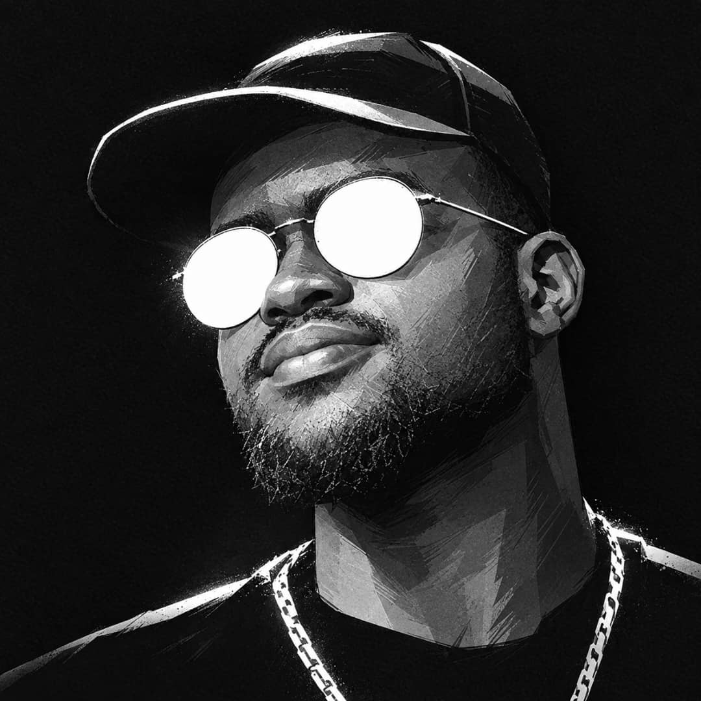

/01
Web applications
Thoughtful interfaces. Connected services. From the first interaction to the API behind it, I build web experiences with purpose.
Responsive interfaces · APIs · Deployment
Hello, I’m Lumu Francis Xavier.
I turn curiosity into code—and ambitious ideas into thoughtful digital experiences. Web, AI, and the systems that connect it all.

Imagine it.
Let’s engineer it.
01A MULTIDISCIPLINARY MIND
The best ideas rarely fit into one box. I connect interfaces, intelligence, data, and infrastructure to bring the bigger picture to life.
Thoughtful interfaces. Connected services. From the first interaction to the API behind it, I build web experiences with purpose.
Turning data into useful intelligence through computer vision, deep learning, and systems that make model outputs usable.
Thinking beyond the screen: routing, segmentation, Linux services, and the infrastructure that keeps everything connected.
Breaking complex problems into connected parts—from API integrations and desktop interfaces to automation and embedded fundamentals.
Small screens, big possibilities. I'm extending my React and API foundations into mobile application development, with intuitive journeys at the centre.
Good software starts with trustworthy data. I work with relational structures, clear relationships, and queries that make information useful.
02WHAT I BUILD
Four connected areas of my practice. From the interface you see to the intelligence and infrastructure underneath.
Intelligence with a purpose.
Computer vision, sequence models, and AI-assisted workflows that turn data into something people can act on.
Digital experiences that feel considered.
Responsive applications that connect thoughtful interfaces, useful APIs, and clear user journeys.
Built around how a business works.
Clear websites, operational interfaces, and automation that connect a business with the people it serves.
The intelligence beneath the interface.
Segmented networks, Linux services, and repeatable automation—the foundations that keep applications connected.
Connecting application backends to messaging and language-model APIs, with an emphasis on the interaction from request to response.
Responsive product interfaces and API-first foundations, while extending my web development experience toward dedicated mobile applications.
Exploring real-time interaction, browser graphics, and the logic behind responsive game systems using JavaScript and HTML5 Canvas.
Experimenting with self-hosted language models, local coding assistants, and Linux-based workflows that make development more independent.
03THE HUMAN BEHIND THE SYSTEMS
I’m Lumu, a software engineering student who sees technology as a way to turn “what if?” into “it works.”
I move between building web platforms, training computer vision models, configuring networks, and understanding the data underneath. Every project adds a new way to think. Every challenge is an invitation to go deeper.
My ambition is to build independent, useful products that solve real problems—starting with the communities and businesses around me, and thinking far beyond them.
THE WAY I THINK
Find the problem worth solving.
Design how the pieces fit.
Turn the idea into something real.
Test, learn, and make it better.
Currently exploring network access & bandwidth products for small businesses in Uganda.
04YOUR NEXT IDEA STARTS HERE
A platform. An intelligent system. A better way of doing things. Tell me what’s on your mind.
0757 742 177